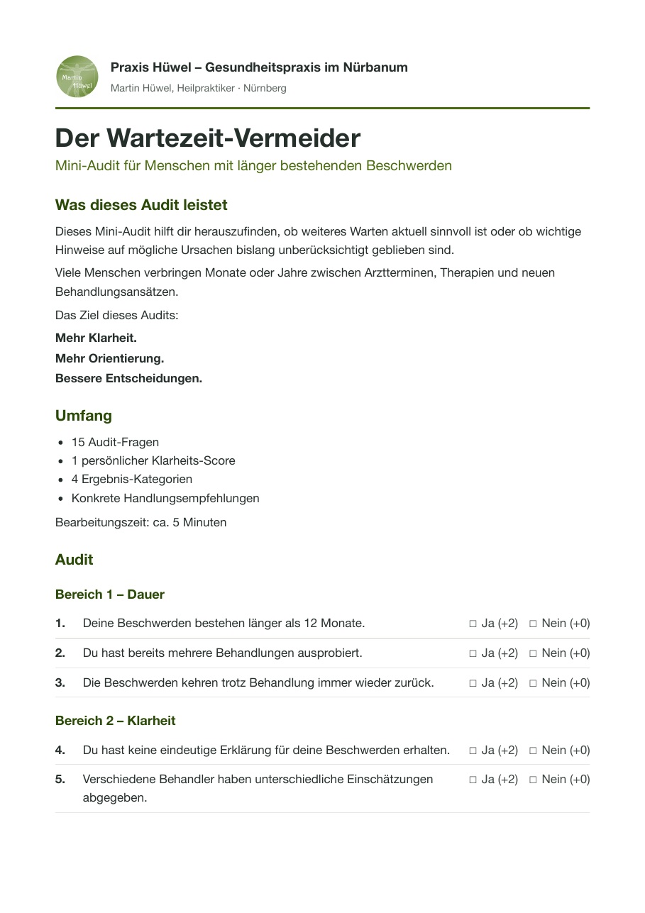

Die Gesundheitspraxis im Nürbanum ist die Praxis von Martin Hüwel, Heilpraktiker in Nürnberg mit über 30 Jahren Erfahrung in Medizin und Naturheilkunde. Behandelt wird nach gründlicher Ursachen-Analyse – mit klassischer Homöopathie, Frequenztherapie (Ondamed/PEMF), Psychosomatischer Energetik und einem strukturierten Gesundheitscheck. Termine gibt es Montag bis Samstag von 8 bis 20 Uhr sowie sonntags, zentral in der Nürnberger Südstadt, Allersberger Straße 185.
Vielleicht kennen Sie das: Sie waren bei mehreren Ärzten, haben Untersuchungen und Befunde gesammelt – und trotzdem bleibt das Gefühl, dass niemand wirklich verstanden hat, was mit Ihnen los ist. Die Beschwerden sind da, oft seit Monaten oder Jahren: ständige Erschöpfung, wiederkehrende Schmerzen, Verdauungsprobleme, Schlafstörungen oder dieses diffuse „irgendetwas stimmt nicht".
Genau für diese Situationen ist meine Praxis da. Ich nehme mir Zeit, Ihre gesamte Geschichte aufzunehmen – nicht nur das aktuelle Symptom. Denn viele Beschwerden entstehen nicht zufällig. Sie entwickeln sich über Zeit, oft durch ein Zusammenspiel aus körperlichen, seelischen und regulativen Faktoren. Meine Aufgabe ist es, diese Zusammenhänge sichtbar zu machen – damit Sie verstehen, was in Ihrem Körper passiert.
Zu mir kommen Menschen mit langjährigen oder unklaren Beschwerden – und auffallend oft Unternehmer, Selbständige und Führungskräfte ab 45, die viel Verantwortung tragen, wenig Zeit haben und eine klare, strukturierte Herangehensweise schätzen. Beiden Gruppen biete ich dasselbe: Gründlichkeit, einen nachvollziehbaren Plan und eine ehrliche Einschätzung, ob und wie ich helfen kann.
Ein Heilpraktiker ist in Deutschland staatlich überprüft und darf eigenständig Heilkunde ausüben. Er arbeitet mit naturheilkundlichen und regulativen Verfahren und nimmt sich in der Regel deutlich mehr Zeit für Anamnese und Gespräch als im getakteten Praxisalltag üblich. Ein Heilpraktiker-Besuch ersetzt keinen Arztbesuch – er ergänzt ihn.
Ich lege mich nicht auf eine einzige Methode fest. Je nach Ihrer Situation kombiniere ich vier bewährte Werkzeuge – immer mit demselben Ziel: die Ursachen Ihrer Beschwerden zu verstehen und gezielt daran zu arbeiten.
Mein zentrales apparatives Verfahren. Über pulsierende elektromagnetische Felder arbeite ich mit dem Regulationssystem Ihres Körpers – individuell ausgetestet statt nach Schema. Die Anwendung ist sanft, schmerzfrei und wird von meinen Patienten als sehr angenehm beschrieben.
Mehr zur Frequenztherapie →Mein Fundament: ein dreijähriges Studium der klassischen Homöopathie, abgeschlossen mit dem CvB-Zertifikat. Am Anfang steht immer die ausführliche Gesamtaufnahme Ihrer Situation – erst dann wähle ich das passende Mittel.
Mehr zur Homöopathie →Körper und Seele lassen sich nicht trennen. Wenn seelische Belastungen körperlich mitreden, hilft dieses Verfahren, verborgene Zusammenhänge aufzuspüren und in die Behandlung einzubeziehen.
Mehr zur Psychosomatischen Energetik →Damit wir nicht raten, sondern messen: Der Bioscan erfasst rund 240 Stoffwechsel-Parameter – von Organfunktionen über Vitamine bis zu Belastungen – und liefert den strukturierten Startpunkt für Ihre Behandlung. Wo sinnvoll, ergänze ich gezielte Labordiagnostik.
Mehr zum Gesundheitscheck →Ihre Geschichte, vollständig. Was haben Sie schon versucht? Welche Befunde liegen vor? Was belastet Sie im Alltag? Hier hören Sie von mir auch eine ehrliche Antwort auf die wichtigste Frage: ob ich Ihnen überhaupt helfen kann.
Gesundheitscheck mit Bioscan und, wo es Sinn ergibt, ergänzende Labordiagnostik. Sie bekommen ein klares Bild statt vager Vermutungen.
Verständlich erklärt, ohne Fachchinesisch. Sie wissen in jedem Schritt, was wir tun, warum wir es tun – und woran wir den Fortschritt messen.
Mit der Ursachen-Klarheitsanalyse erhalten Sie eine strukturierte Einschätzung, ob dieser Behandlungsansatz für Sie sinnvoll ist. Die Analyse ist kein medizinisches Heilversprechen, sondern dient als Orientierung und Entscheidungsfindung.
Sie müssen sich nicht sofort für ein Behandlungspaket entscheiden. Im persönlichen Gespräch entscheiden wir gemeinsam, ob eine Einzelbehandlung ausreicht oder ein strukturierter Behandlungsprozess für Ihre Situation sinnvoller ist.

Dann ist der kostenlose Wartezeit-Vermeider der erste Schritt.
Für Menschen mit akuten und chronischen Schmerzen, körperlichen Beschwerden oder länger bestehenden gesundheitlichen Belastungen.
Was ist enthalten?
Geeignet für Menschen, bei denen emotionale oder psychosomatische Belastungen eine Rolle spielen können.
Enthalten
Für Menschen mit komplexen oder langjährigen Beschwerden.
Enthalten
Einzeltermine sind selbstverständlich weiterhin möglich (90 € / 60 Minuten).
Der Ersttermin dauert etwa 90 Minuten. Abgerechnet wird nach dem Gebührenverzeichnis für Heilpraktiker (GebüH) – Sie sehen also jederzeit, wofür Sie bezahlen.
Zur Erstattung: Gesetzliche Krankenkassen übernehmen Heilpraktiker-Leistungen in der Regel nicht. Private Krankenversicherungen und Beihilfe erstatten je nach Tarif anteilig oder vollständig – ein Blick in Ihre Police lohnt sich. Bezahlen können Sie bequem per Karte oder bar.
Ob ein umfassenderes Behandlungspaket für Sie sinnvoll ist, klären wir ausschließlich gemeinsam im Erstgespräch – nie vorher.
Über 30 Jahre in Medizin und Naturheilkunde: Vor meiner Praxistätigkeit habe ich viele Jahre im Krankenhaus gearbeitet – in der Inneren Medizin, der Chirurgie, der HNO und auf der Intensivstation, mit Erfahrung im OP-Bereich und in der Anästhesie. Ich weiß also sehr genau, was die Schulmedizin leisten kann – und wo es sich lohnt, zusätzlich genauer hinzuschauen.
Meine Qualifikationen:

Mit dem Klick auf „Abspielen“ laden Sie das Video von YouTube. Dabei werden Daten an YouTube übertragen (Datenschutz).
„Über einen längeren Zeitraum hatte ich beruflich viel Stress, der mich gesundheitlich sehr belastet hat. Herr Hüwel hat mir mit der Psychosomatischen Energetik sehr schnell und nachhaltig geholfen – seitdem sind meine Beschwerden verschwunden. Sehr kompetent und einfühlsam."
„Ich gehe seit mehr als 10 Jahren zu Martin Hüwel. Mit seiner Frequenztherapie hat er meinen Heilungsprozess drastisch abgekürzt. Durch seine Erfahrung als Krankenpfleger ist er ein wichtiger Ansprechpartner – schulmedizinisch wie naturheilkundlich. Von ganzem Herzen zu empfehlen."
„Nachdem die Allgemeinmedizin versagt hatte, konnte mir hier endlich weitergeholfen werden. 100 % Weiterempfehlung."
„Sehr kompetente und sehr freundliche Beratung und Behandlung. Hat mir sehr geholfen. Vielen Dank – ich komme gerne wieder!"
„Herr Hüwel ist sehr zuverlässig und kompetent. Wir sind alle sehr zufrieden und können ihn nur weiterempfehlen!"
Wenn Sie den Ursachen Ihrer Beschwerden wirklich auf den Grund gehen möchten, lassen Sie uns sprechen. Im Erstgespräch klären wir in Ruhe, wo Sie stehen und ob ich Ihnen helfen kann – ehrlich und ohne Verkaufsdruck. Oder schreiben Sie einfach eine kurze E-Mail an info@praxis-huewel.de – ich melde mich zeitnah bei Ihnen.
Sie finden mich im Nürbanum, dem großen Gewerbe- und Gesundheitsstandort in der Nürnberger Südstadt. Parkplätze sind vorhanden, die Anbindung mit öffentlichen Verkehrsmitteln ist gut. Termine gibt es Montag bis Samstag von 8:00 bis 20:00 Uhr sowie sonntags von 10:00 bis 22:00 Uhr – auch für Berufstätige machbar, ohne Urlaubstag. Viele meiner Patientinnen und Patienten kommen aus dem gesamten Nürnberger Raum, auch aus Erlangen, Fürth und Schwabach.
Adresse
Allersberger Straße 185, Gebäude A7, 3. OG
90461 Nürnberg
Telefon
0911 6007651
E-Mail
info@praxis-huewel.de
Termine
Mo–Sa 08:00–20:00 · So 10:00–22:00
Hinweis: Die Naturheilkunde einschließlich der genannten Verfahren ist wissenschaftlich umstritten und wird von der Schulmedizin nicht allgemein anerkannt. Die Angaben beschreiben Arbeitsweise und Qualifikation; sie stellen kein Heilversprechen dar und ersetzen keinen Arztbesuch.